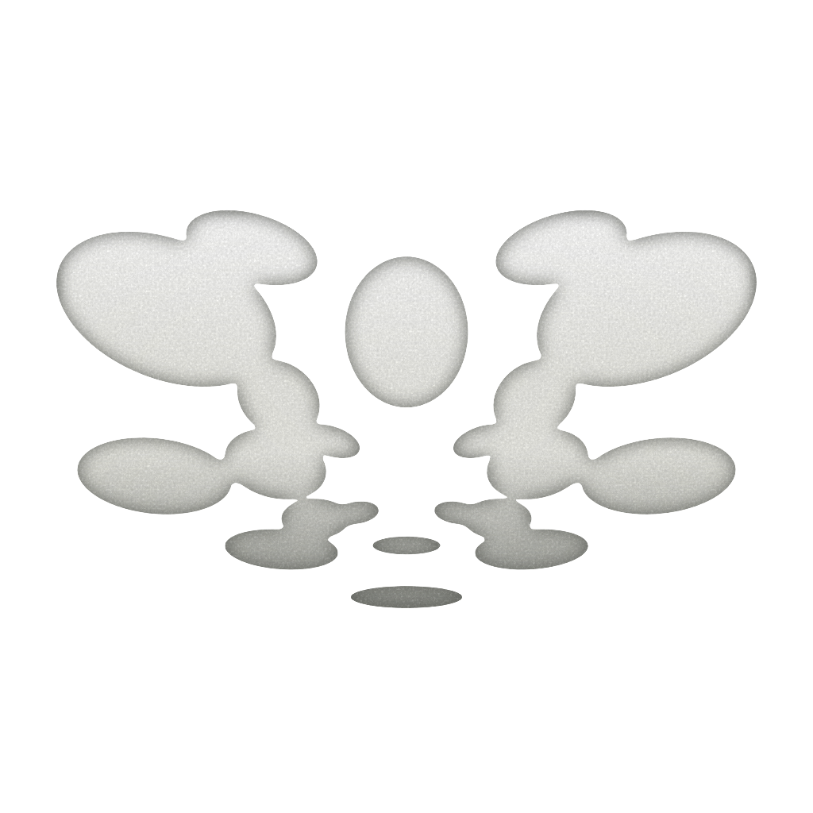

Brand sheet · v1.0 · Moon edition
01 The mark

App icon · chrome on graphite
Flat mark · on dark

Flat mark · on light
02 What it means
- Four travellers: spiral orbits chasing each other, like probes still circling long after the mission ended.
- Open eyes: each head is still looking. The hardware went quiet, but it's still out there watching.
- The open centre: the places they were left. Everything circles back to what's been forgotten.
- Flag-cut tails: launched outward from Earth, now curling inward to rest.
03 Sizes & clear space

Below 32px use the flat favicon — bevel and chrome turn to mush at small sizes. Keep clear space of one band width on all sides.
04 Colour
Green and orange are status colours, never decoration. Chrome is reserved for the mark.
05 Typography
Display · Inter 600 · tracked +8%
LOSTRONOMY
Headlines and the wordmark. Sentence case for story text, all caps only for titles.
Interface · JetBrains Mono 400–700
[LUNA 2] 29.1°N
LABELS · COORDINATES · COUNTERS · GRID A–F / 1–5
06 Voice
Looks like mission control, talks like a friendly guide. Real facts, short sentences, a bit of wonder.
"This rover drove 35 km on the Moon. Its tracks are still there."
"Lunar Roving Vehicle LRV-001 surface traversal: 35.74 km aggregate."
07 Do / Don't
- DOPut the mark on Void or Graphite. Let it breathe.
- DOUse the flat mark in one colour when chrome won't render.
- DON'TRotate it, mirror it, or straighten the bands.
- DON'TFill the open centre, close the eyes, or recolour the mark green/orange.
- DON'TAdd outlines, glows or busy photo backgrounds behind it.
08 Files
app-icon.svg chrome tile · vector app-icon-1024.png 1024 × 1024 lockup.svg horizontal · vector lockup.png 2400 × 600 mark.svg flat · light mark-black.svg flat · dark favicon.svg 16–48 px


All generated from one traced arm: python3 scripts/build_brand.py